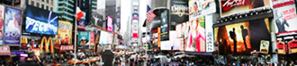

BUYING TIMES SQUARE
I got the idea for this project when I was visiting New York. While in Times Square, I was overwhelmed by the amount of adevertisments that were just yelling at me to buy their products. I wondered what it would look like if the ads were all literal, so i brought the images a took into illustrator and made them that way. This is a solvent transfer print, 45in x 14in.